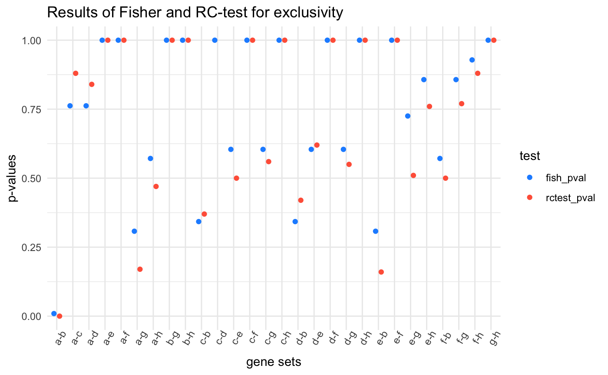
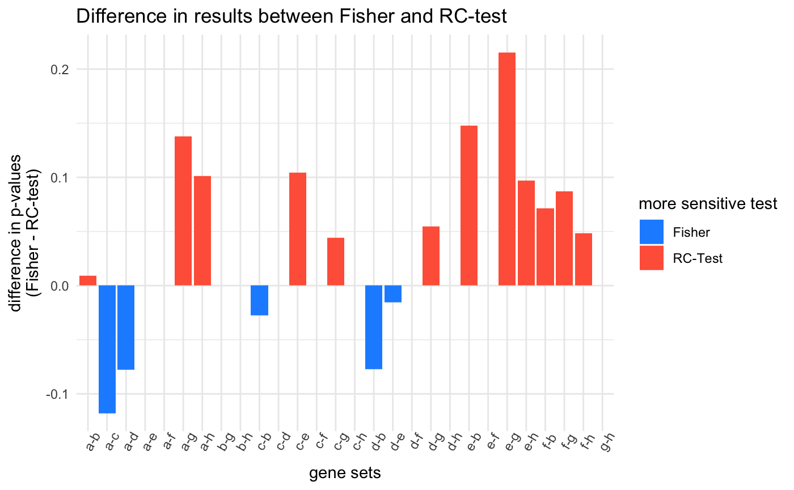

vignettes/compare_rc_to_fisher.Rmd
compare_rc_to_fisher.RmdThis vignette compares the results of the classic one-sided Fisher’s test for mutual exclusivity and the Row-Column Exclusivity test on a simple data set.
simple_dataset %>%
mutate(sample_name = factor(sample_name, levels = as.character(1:14))) %>%
ggplot(aes(x = sample_name, y = mutated_gene)) +
geom_tile(color = "grey50") +
theme_bw()From the plot, it seems that genes “c” and “d” strongly co-mutate while “a” and “b” are strongly mutually exclusive. Samples “1” and “2” have more mutation than the others while samples “11” and “12” have only two mutations each. This information is taken into account in the RC test but not the one-sided Fisher’s exact test.
The following functions perform a one-sided Fisher’s exact test for a odds ratio less than 1. one_sided_fish() takes the data and the column holding the samples and their mutations. It then runs each combination of two genes through the Fisher’s exact test in single_one_sided_fish()
# conduct a one-sided Fisher's exact test between all genes in `mutgene_col`
# of `dat`
one_sided_fish <- function(dat, sample_col, mutgene_col,
which_test = "exclusivity") {
original_colnames <- c(
rlang::as_string(rlang::ensym(sample_col)),
rlang::as_string(rlang::ensym(mutgene_col))
)
# determine side of Fisher's given the test to perform
if (which_test %in% c("exclusivity", "e")) {
side <- "l"
} else if (which_test %in% c("comutation", "c")) {
side <- "g"
}
# enquote the input column names
sample_col <- rlang::enquo(sample_col)
mutgene_col <- rlang::enquo(mutgene_col)
# vector of all genes
genes <- rlang::eval_tidy(mutgene_col, dat) %>% unlist() %>% unique()
results_tib <- make_empty_fish_results_tracker(genes, 2, c()) %>%
purrr::pmap(
single_one_sided_fish,
data = dat, sample_col = !!sample_col,
mutgene_col = !!mutgene_col, side = side
) %>%
bind_rows()
return(results_tib)
}
# conduct a one-sided Fisher's exact test between the genes in `gene_set` using
# the data in `data`
single_one_sided_fish <- function(gene_sets, data, sample_col, mutgene_col, side) {
# enquote the input column names
sample_col <- rlang::enquo(sample_col)
mutgene_col <- rlang::enquo(mutgene_col)
cont_tbl <- data %>%
make_contingency_table(genes = gene_sets, !!sample_col, !!mutgene_col)
fe <- fisher.test(cont_tbl, alternative = side)
tibble::tibble(gene_sets = list(gene_sets),
fish_pval = fe$p.value,
oddsratio = fe$estimate)
}make_contingency_table() creates the 2x2 contingency table as input for the Fisher’s exact test in single_one_sided_fish().
# construct the contingency table (2x2)
make_contingency_table <- function(dat, genes, sample_col, mutgene_col) {
# enquote the input column names
sample_col <- rlang::enquo(sample_col)
mutgene_col <- rlang::enquo(mutgene_col)
genes <- unlist(genes)
g1 <- genes[[1]]
g2 <- genes[[2]]
all_samples <- rlang::eval_tidy(sample_col, dat) %>% unlist() %>% unique()
g1_mut <- filter(dat, !!mutgene_col == !!g1) %>% pull(!!sample_col) %>% unique()
g1_wt <- setdiff(all_samples, g1_mut)
g2_mut <- filter(dat, !!mutgene_col == !!g2) %>% pull(!!sample_col) %>% unique()
g2_wt <- setdiff(all_samples, g2_mut)
A <- intersect(g1_mut, g2_mut) %>% length()
B <- intersect(g1_mut, g2_wt) %>% length()
C <- intersect(g1_wt, g2_mut) %>% length()
D <- intersect(g1_wt, g2_wt) %>% length()
matrix(c(A, B, C, D), nrow = 2)
}make_empty_results_tracker() initializes the results tracker with a single column gene_sets containing lists of ever combination of k genes in gs. For this use, k = 2 and seed_genes can be ignored (seed_genes = c()).
# start the results tracking tibble with the gene sets and t_BM_gr = 0
make_empty_fish_results_tracker <- function(gs, k, seed_genes) {
combs <- combn(unlist(gs), k) %>%
apply(2, list) %>%
unlist(recursive = FALSE)
if (length(seed_genes) > 0) {
idx <- purrr::map_lgl(gs, ~ any(seed_genes %in% .x))
combs <- combs[idx]
}
tibble::tibble(gene_sets = combs)
}Running the test produces results that generally agree with the prior visualization. The mutations to “a” and “b” seem to be the only significantly mutually exclusive set.
# column `gene_sets_print` shows the gene sets when printed
fish_test <- one_sided_fish(simple_dataset, sample_name, mutated_gene) %>%
mutate(gene_sets_print = purrr::map_chr(gene_sets, ~ paste0(.x[[1]], "-", .x[[2]]))) %>%
arrange(fish_pval, gene_sets_print, oddsratio)
fish_test
#> # A tibble: 28 x 4
#> gene_sets fish_pval oddsratio gene_sets_print
#> <list> <dbl> <dbl> <chr>
#> 1 <chr [2]> 0.00932 0 a-b
#> 2 <chr [2]> 0.308 0 a-g
#> 3 <chr [2]> 0.308 0 e-b
#> 4 <chr [2]> 0.343 0.362 c-b
#> 5 <chr [2]> 0.343 0.362 d-b
#> 6 <chr [2]> 0.571 0 a-h
#> 7 <chr [2]> 0.571 0 f-b
#> 8 <chr [2]> 0.604 0.527 c-e
#> 9 <chr [2]> 0.604 0.527 c-g
#> 10 <chr [2]> 0.604 0.527 d-e
#> # … with 18 more rowsThis test conditions on the rows and columns of the mutation matrix, thus accounting for the number of mutations per gene and per sample. This comes at a cost in speed of computation as the RC test is much slower to run. Here, I run the test using 10,000 permutations. Also, the paramters min_mut_events and min_times_mut are set to 0 becasue the test data set is so small; on real data, these should be non-zero values (the defaults are 2 and 3, respectively) to ignore very rare events.
By comparing the p-values returned by each test, we can see which was more sensitive.
The first plot below just shows the p-values for each gene set tested, and the second shows the difference between values. . For most of the comparisons, the Fisher’s exact test returned higher p-values


Both tests easily identify the obvious and robust mutually exclusive mutational pattern of genes “a” and “b”. The Fisher’s exact test returned a smaller p-value for the gene sets a-c, a-d, c-b, and d-b. These four gene sets show a large degree of co-mutation and a few instances of exclusivity. Where the RC-test outperforms the Fisher’s exact test is with the more rare, yet strict, patterns of mutual exclusivity such as gene sets a-g or a-h, and e-b and f-b. Even more striking are the rare events between “e” and “f” which are both rarely mutated but always mutually exclusive. Their rarity diminishes the sensitivity of the Fisher’s exact test, but the RC-test, by using the mutational frequencies of the samples, is better at recognizing these these potentially important trends.